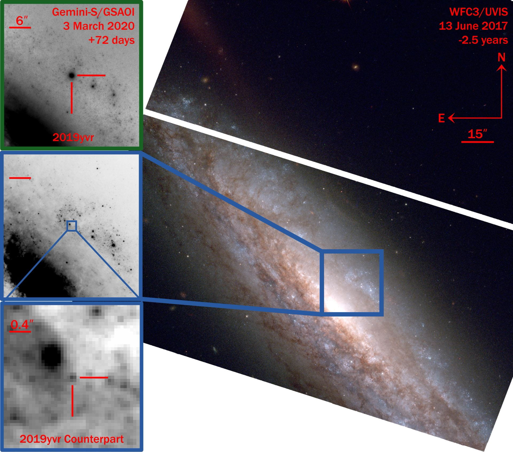
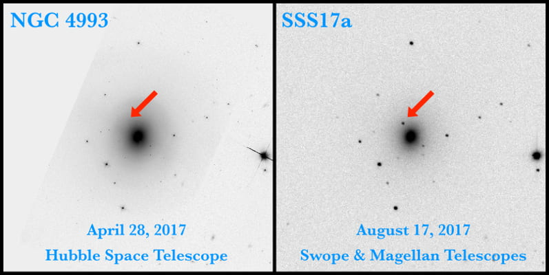
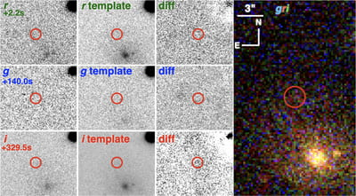
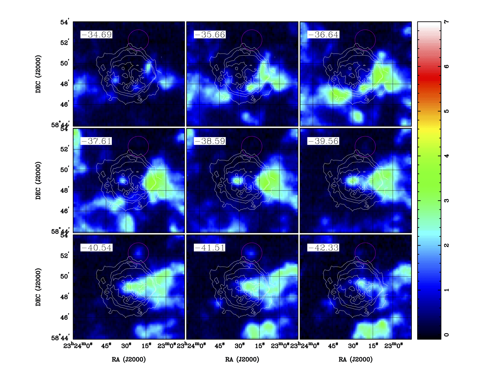

Research
Supernova progenitor stars

I use pre-explosion imaging to identify supernova progenitor systems. The classic example is Sanduleak -69 202 for SN 1987A. I search HST, laser-guide-star adaptive optics, and JWST data for counterparts, including the unusually cool progenitor of the Type Ib SN 2019yvr (above). Only a few dozen progenitors are known. Expanding that sample involves a range of state-of-the-art analysis techniques, including novel space telescope pipelines, high-precision astrometry and distortion modeling, and developing new models for the spectral energy distributions of massive stars.
I build image-registration and comparison tools for pre-SN fields and maintain updated Keck/OSIRIS distortion solutions for archival data. I am on the science teams for new Keck and Gemini AO imagers, including SCALES. Circumstellar dust can hide or redden progenitors at optical wavelengths. I work with Spitzer, HST, ground-based IR, and JWST to probe dust emission and extinction around massive stars before explosion.
- Kilpatrick, C. D., et al. The Type II SN 2025pht in NGC 1637: a red supergiant with carbon-rich circumstellar dust as the first JWST detection of a supernova progenitor star. (2025), ApJL, 992, L10 (arXiv)
- Kilpatrick, C. D., et al. SN 2023ixf in Messier 101: a variable red supergiant as the progenitor candidate to a Type II supernova. (2023), ApJL, 952, L23 (arXiv)
- Kilpatrick, Drout, Auchettl, et al. A cool and inflated progenitor candidate for the Type Ib supernova 2019yvr at 2.6 yr before explosion. (2021), MNRAS, 504, 2073
- Kilpatrick, Foley, Drout, et al. Connecting the progenitors, pre-explosion variability, and giant outbursts of luminous blue variables with Gaia16cfr. (2018), MNRAS, 473, 4805
- Kilpatrick, Takaro, Foley, et al. A potential progenitor for the Type Ic supernova 2017ein. (2018), MNRAS, 480, 2072
- Kilpatrick & Foley. The dusty progenitor star of the Type II supernova 2017eaw. (2018), MNRAS, 481, 2536
- Kilpatrick, Coulter, Dimitriadis, et al. X-ray limits on the progenitor system of the Type Ia supernova 2017ejb. (2018), MNRAS, 481, 4123
- Kilpatrick, Foley, Abramson, et al. On the progenitor of the Type IIb supernova 2016gkg. (2017), MNRAS, 465, 4650
CNN: ‘Oddball supernova’ reveals star’s death throes before exploding
STScI: Astronomers find possible elusive star behind supernova
National Geographic: The mystery of the universe’s missing exploding stars
Gravitational wave astronomy

I work on optical counterpart searches, multi-wavelength follow-up, and physical modeling of gravitational-wave sources. I contributed to identifying SSS17a, the optical counterpart to the binary neutron star merger GW170817, and I help plan coordinated follow-up to future LIGO/Virgo/KAGRA events.
Broadband data from radio to X-ray are needed to separate kilonova, afterglow, and host contributions and to test for r-process signatures in spectra and light-curve decline rates. That work requires rapid scheduling, good models, and wide wavelength coverage.
I am the PI of the Treasure TROVE (TROVE) collaboration, a multi-messenger effort with partners including the University of Arizona, UC San Diego, and Northwestern. TROVE (the Tool for Rapid Object Vetting and Examination) is building a public, open-source, API-enabled platform to vet transients in real time for gravitational-wave and other multi-messenger follow-up. See the TROVE website for the team, software, and publications.
- Kilpatrick, Fong, Blanchard, et al. Hubble Space Telescope observations of GW170817: complete light curves and the properties of the galaxy merger of NGC 4993. (2022), ApJ, 926, 49
- Kilpatrick, Coulter, Foley, et al. The Gravity Collective: a search for the electromagnetic counterpart to the neutron star-black hole merger GW190814. (2021), ApJ, 923, 258
- Kilpatrick, Foley, Kasen, et al. Electromagnetic evidence that SSS17a is the result of a binary neutron star merger. (2017), Science, 358, 1583
Science: early-career researchers and Science’s Breakthrough of the Year
Fast radio bursts

Fast radio bursts are millisecond radio flashes. Some repeaters are localized to host galaxies (above), and a Galactic magnetar has produced similar bursts, but non-radio counterparts remain scarce. I run optical and X-ray follow-up, including high-cadence imaging of the nearby periodic source FRB 180916 (above).
- Kilpatrick, Burchett, Jones, et al. Deep optical observations contemporaneous with emission from the periodic FRB 180916.J0158+65. (2021), ApJL, 907, L3
- Kilpatrick, Tejos, Prochaska, et al. Limits on optical counterparts to the repeating FRB 20180916B from high-speed imaging with Gemini-N/’Alopeke. ApJ, submitted
Supernova remnants

Galactic supernova remnants interact with ambient molecular gas. Those encounters regulate how explosions deposit energy and momentum into the cold interstellar medium, which drives galactic feedback. They also stir interstellar turbulence and multiphase structure in molecular clouds, and they highlight interfaces where blast waves and cloud shocks can operate as sites of cosmic-ray acceleration. Quantifying when and where remnants actually shock dense molecular gas is a basic constraint on all of these processes.
Using 12CO J=2-1 (231 GHz) data from the Heinrich Hertz Submillimeter Telescope, I searched for broad molecular lines, signatures of shocked gas, near Cas A (above) and in a systematic survey of 50 Galactic SNRs. Shocked CO is detected toward Cas A. That survey found broadened CO toward nineteen SNRs in total, including nine newly identified broad-line regions associated with SNR-molecular cloud interaction.
- Kilpatrick, Bieging, & Rieke. A systematic survey for CO toward Galactic supernova remnants. (2016), ApJ, 816, 1
- Kilpatrick, Bieging, & Rieke. Interaction between Cassiopeia A and nearby molecular clouds. (2014), ApJ, 796, 144